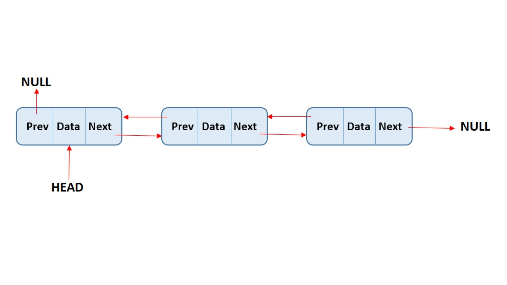
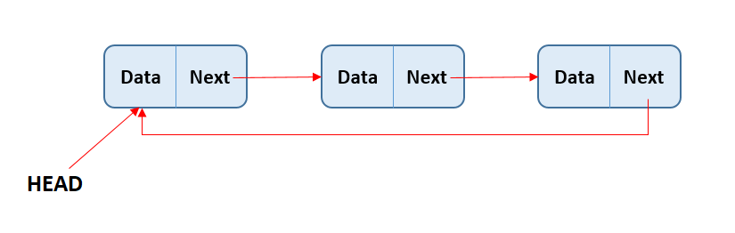

Experiment - 1
Aim -
Understand and implement the concept of linear data structure such as singly linked list, doubly linked list and circular linked list
Objective -
In this experiment on Linked Lists, you will learn following topics:
Theory -
Linked list is a linear data structure where each data is a separate object (of same data type). Linked list objects do not occupy the contiguous memory location as compared to the array which is also a linear data structure where elements have contiguous memory allocation, instead linked lists are linked using pointers. Elements of the linked lists are known as Nodes.
There are three types of linked lists:
Singly Linked List (SLL)
Each Node of the singly list consists of two parts:
Figure: Singly Linked List (SLL)
Doubly Linked List (DLL)
Doubly linked list is a complex type of linked list in which a node contains a pointer to the previous as well as the next node in the sequence. Therefore, in a doubly linked list, a node consists of three parts: node data, pointer to the next node in sequence (next pointer) , pointer to the previous node (previous pointer). In a singly linked list, we could traverse only in one direction, because each node contains address of the next node and it doesn't have any record of its previous nodes. However, doubly linked list overcome this limitation of singly linked list. Due to the fact that, each node of the list contains the address of its previous node, we can find all the details about the previous node as well by using the previous address stored inside the previous part of each node.
Figure: Doubly Linked List (DLL)
Circular Linked List (CLL)
Circular Linked List is a variation of Linked list in which the first element points to the last element and the last element points to the first element. Both Singly Linked List and Doubly Linked List can be made into a circular linked list.The insertion operation of a circular linked list only inserts the element at the start of the list. This differs from the usual singly and doubly linked lists as there is no particular starting and ending points in this list. The insertion is done either at the start or after a particular node (or a given position) in the list.
Figure: Circular Linked List (CLL)
Conclusion -
Students have understood and implemented the logic of singly linked list, doubly linked list and circular linked list.